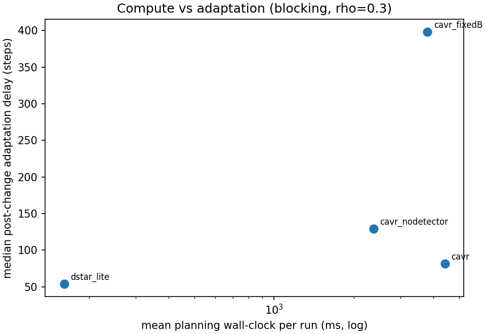

Blocking, ρ=0.3: median post-change adaptation delay vs mean planning wall-clock per run (log scale).
Removing the detector doubles the delay; fixing the budget B=32 nearly quintuples it while spending the same compute — the adaptive arbiter, not raw planning depth, is what buys fast recovery.